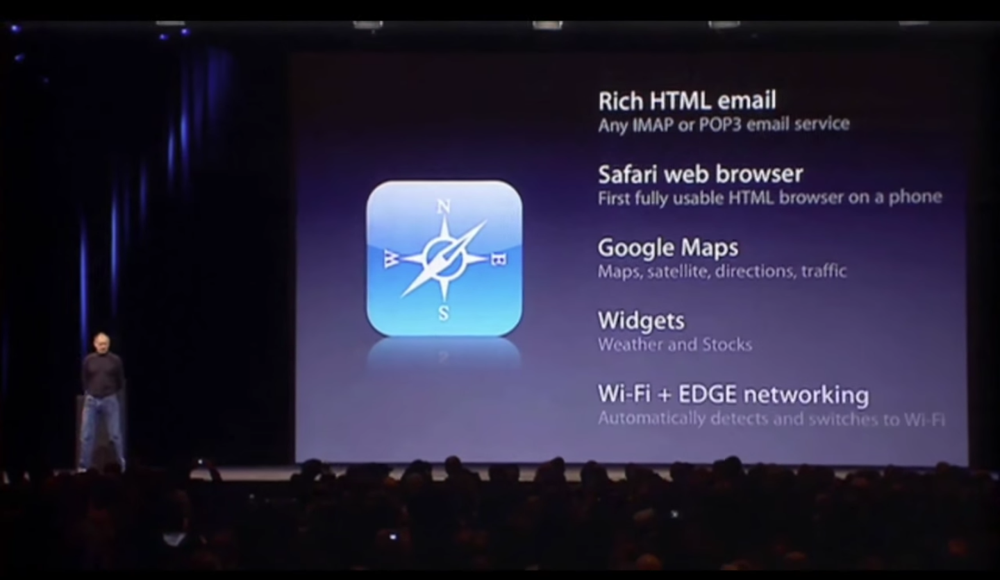

FirefoxOS: The Web is the Plattform

Let's start from the beginning
Well, may be not so beginning
Pc's became part of our day to day

And desktop software came with it
But everything changed with...
A new way of communicating

This is how the web looked


- The Internet is a global public resource that must remain open and accessible.
- The Internet should enrich the lives of individual human beings.
- Individuals' security on the Internet is fundamental and cannot be treated as optional.
- Individuals must have the ability to shape their own experiences on the Internet.
Don't get me wrong, not only Mozilla did it

Where is the software now?
And then, the next new thing...

- Apps
- Marketplace
- Objective C

- Apps
- Marketplace
- Objective C
Software repositories: sounds familiar...
- Apps
- Marketplace
- Objective C
Upgrading the mobile world

- Targeted at new, emerging markets
- Very affordable hardware
- Cost control aware
- Web technologies through and through
- Standarizing APIs
- Vibration API
- Screen Orientation
- Geolocation API
- Mouse Lock API
- Open WebApps
- Network Information API
- Battery Status API
- Alarm API
- Push Notifications API
- WebFM API / FMRadio
- WebPayment
- IndexedDB
- Ambient light sensor
- Proximity sensor
- Notification
Using WebAPIs to make the web layer more capable

Everything in the OS is open web technology and standard proposals